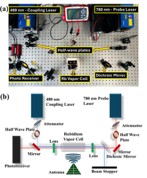

FIELD GUIDE · RESEARCH TEXTBOOK · 2026From quantum states
From quantum states
to atomic RF sensors.
A navigable, evidence-linked handbook for the complete Rydberg receiver workflow: physics, optical laboratory, microwave design, numerical inference, diagnostics and reproducible scientific code.
24 conceptual chapters1,000 distinct solved exercises21 reference entries

KEEP EXPLORING
Launch live physics lab ↗Try the physical parameters.
Change Rydberg transition parameters, RF field strength or polarisation angles in the interactive models. These demonstrate idealised equations, not simulated or experimental results.